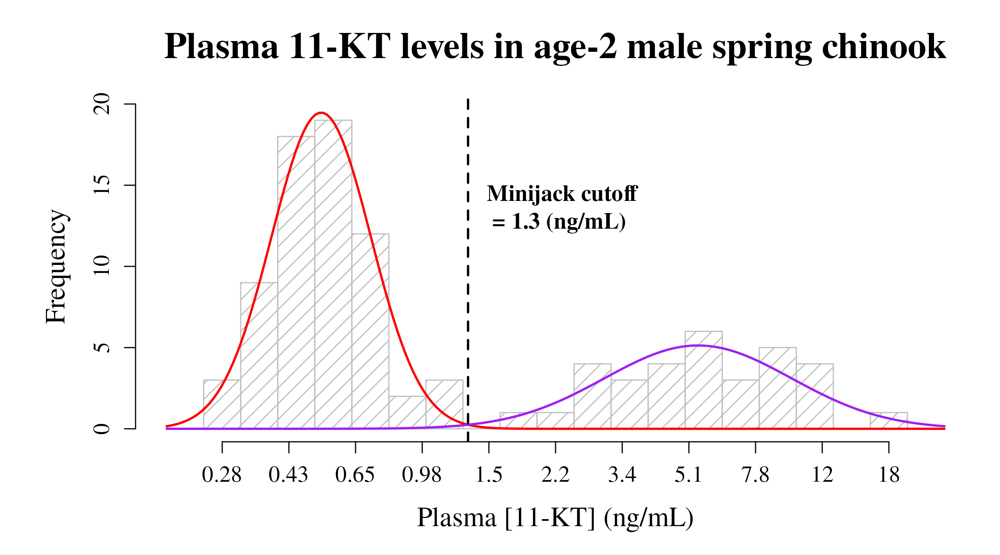

cutoffvalue: Quick Results
Lea R Medeiros
2025-06-27
QuickResults.RmdBrief overview of the cutoffvalue package
Description
cutoffvalue is a simple R package that implements an updated version of the method first developed and used in Medeiros et al. (2018)1. It can be used to determine an objective cutoff value between a significantly bimodal distribution of log-transformed data and plot a representative graph of the results.
The functions in this package are written to utilize the example data set (an internal dataset object identified as “cutoffvalue:::exampledata”) and will use it by default if the path for a dataset is not provided. The examples below specify this, along with any other default parameters for each function. Below are the instructions on how to install the cutoffvalue package, setup the R Studio environment, and suggestions on how to import and convert your dataset into the proper format (i.e., a list of numeric values).
Quick & Dirty - The bare minimum needed to get results
The overall goals of this package are to (1) determine a cutoff value between the upper and lower modes of the dataset and (2) produce a nice graph of the results that includes a histogram of the data, the two models fit to the upper and lower modes, and a line depicting the cutoff value. The functions are written to be run independently, so that only two functions need to be run to get the necessary information:
- modes() <- Determines modality of the dataset, which is an assumption for the remaining functions
- cutoffplot() <- Determines the cutoff value and produces a nice graph of the results
This vignette will only go over the two functions that are absolutely necessary to get results and know if they’re statistically significant.
Installation of the package
You can install the latest version of cutoffvalue from GitHub with:
# devtools::install_github("lea-medeiros/cutoffvalue", dependencies = TRUE, build_vignettes = TRUE)Setup R Studio
Load the cutoffvalue package
library(cutoffvalue)
library(readxl) # Only necessary if you will be importing an excel file (see below)Import your raw dataset
Import the data file to be used in the analyses and graph. The package includes a dataset for use as an example - this object is accessible as “cutoffvalue:::exampledata” and will be used in the examples.
Import your own dataset any way you prefer. I find that the easiest way to import data is to use the “Import Dataset” function built into R Studio, but you can also use code. The imported data must then be converted into a list of numeric values. An example of code that should work (after you update certain parts to be specific to your dataset) is included below.
# yourrawdata <- read_excel("/path/to/your/excel/data", col_names = TRUE) # Imports the data as a dataframe with first row as column names
# yourrawdata <- as.numeric(yourrawdata$columnname) # converts the specified column to a numeric list of valuesEach function in this package uses the provided dataset (whether it’s
the example dataset or one you provided) and cleans it up (via the
cleandata function, see below) to remove any blank cells.
This function then provides a list of objects: the data
(mydata$data), the maximum value
(mydata$upper), and the minimum value
(mydata$lower), all of which are then used in subsequent
calculations.
Using two functions to determine modality and generate the final plot
Use the modes function to determine modality
Evaluating an objective and valid cutoff value depends upon whether the dataset is bimodal. Which means that the modality of the dataset should be determined before proceeding. The null hypothesis of this test is that the dataset is unimodal; an excess mass statistic associated with a p-value of less than 0.05 implies it is more than unimodal. It is strongly suggested that you run this test prior to any other function in cutoffvalue; however, how you proceed depends on your knowledge and understanding of the data.
The
modesfunction uses the example dataset (an internal dataset object identified as “cutoffvalue:::exampledata”) by default. Thus, if the path for the dataset is not specified (e.g., running modes() in the console), this is the data that will be used.
When given a label (i.e., “modetest” in the example below), this function returns the Excess Mass statistic and associated p-value to the Environment.
Please keep in mind that the default parameters of cutoffvalue assume a bimodal distribution - any other modalities may cause inaccuracies in the results.
modetest <- modes(cutoffvalue:::exampledata)
#> Modality Test Results:
#> - Excess mass = 0.097446
#> - p-value = 0.002
#> **Reject null hypothesis** Distribution contains more than one mode; proceed with analyses.
#>
#> Test Credit: Ameijeiras-Alonso et al. (2019) excess mass testThe modes() function returns the p-value and excess
mass statistic along with instructions on how to proceed based on the
p-value. If the p-value is less than 0.05, accept the alternative
hypothesis (data is at least bimodal) and proceed with analysis.
However, if the p-value is more than 0.05, the data is unimodal and the
following analyses are not entirely valid.
Use the cutoffplot function to plot the final
graph
Plot a pretty graph that includes a histogram of the data, curve lines for each mode generated from the model results, the cutoff value depicted as a line, and labels customized for your dataset.
The
cutoffplotfunction uses the example dataset (an internal dataset object identified as “cutoffvalue:::exampledata”) by default. Thus, if the path for the dataset is not specified (e.g., running cutoffplot() in the console), this is the data that will be used. Parameters (and their defaults) for the resulting graph are listed below.
When given a label (i.e., “plotty” in the example below), this function returns the log-transformed cutoff value to the Environment.
Specify graph labels
You will likely want to change the following parameters to match your
own dataset and preferences. If nothing is specified in the
cutoffplot function, then these are the defaults that will
be used in the graph.
title <- "Plasma 11-KT levels in age-2 male spring chinook" # Graph title
xlab <- "Plasma [11-KT] (ng/mL)" # X-axis label
cutofflab <- "Minijack cutoff" # label for cutoff value on graph
cutoffunits <- "(ng/mL)" # units for cutoff value
LowerMode_col <- "red" # line color for the lower mode
LowerMode_lty <- 1 # line type for the lower mode
LowerMode_lwd <- 2 # line width for the lower mode
UpperMode_col <- "purple" # line color for the upper mode
UpperMode_lty <- 1 # line type for the upper mode
UpperMode_lwd <- 2 # line width for the upper mode
cutoffvalue_col <- "black" # line color for the cutoff value
cutoffvalue_lty <- 2 # line type for the cutoff value
cutoffvalue_lwd <- 2 # line width for the cutoff valuePlot the graph
plotty <- cutoffplot(cutoffvalue:::exampledata, title, xlab, cutofflab, cutoffunits, LowerMode_col, LowerMode_lty, LowerMode_lwd, UpperMode_col, UpperMode_lty, UpperMode_lwd, cutoffvalue_col, cutoffvalue_lty, cutoffvalue_lwd)